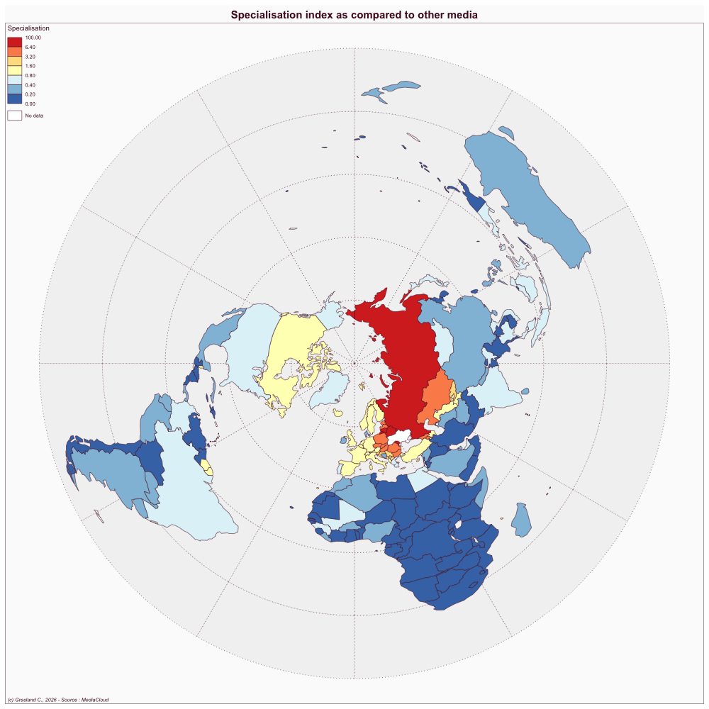

| Rank | Country | weighted news | % of news |
|---|---|---|---|
| 1 | RUS | 6731 | 37.2 |
| 2 | USA | 2249 | 12.4 |
| 3 | GBR | 922 | 5.1 |
| 4 | DEU | 611 | 3.4 |
| 5 | FRA | 488 | 2.7 |
| 6 | POL | 400 | 2.2 |
| 7 | CHN | 346 | 1.9 |
| 8 | TUR | 332 | 1.8 |
| 9 | ITA | 314 | 1.7 |
| 10 | ESP | 309 | 1.7 |
| 11 | BLR | 260 | 1.4 |
| 12 | CAN | 192 | 1.1 |
| 14 | BRA | 189 | 1.0 |
| 14 | GEO | 189 | 1.0 |
| 15 | SYR | 185 | 1.0 |
| 16 | IND | 178 | 1.0 |
| 17 | JPN | 173 | 1.0 |
| 18 | HUN | 161 | 0.9 |
| 19 | ISR | 146 | 0.8 |
| 20 | NLD | 143 | 0.8 |
Fakty i Kommentarii
Ukraine
Website
- Link: https://fakty.ua/
Publications
Szostek J. 2014. Russia and the news media in ukraine: A case of “soft power”? East European Politics and Societies 28: 463–486
SALIENCE ANALYSIS
Top countries
Dorling cartogram

Specialisation index

NETWORK ANALYSIS
Top dyads of countries
| Rank | Country1 | Country2 | weighted dyads | % of dyads |
|---|---|---|---|---|
| 1 | USA | RUS | 162.0 | 15.5 |
| 2 | SYR | RUS | 52.1 | 5.0 |
| 3 | RUS | GBR | 37.4 | 3.6 |
| 4 | RUS | BLR | 35.9 | 3.4 |
| 5 | RUS | DEU | 25.6 | 2.4 |
| 6 | TUR | RUS | 18.8 | 1.8 |
| 7 | RUS | POL | 17.1 | 1.6 |
| 8 | USA | SYR | 15.0 | 1.4 |
| 9 | FRA | DEU | 11.5 | 1.1 |
| 10 | RUS | GEO | 11.1 | 1.1 |
| 11 | USA | GBR | 10.6 | 1.0 |
| 12 | USA | CAN | 10.0 | 1.0 |
| 13 | RUS | FRA | 9.7 | 0.9 |
| 14 | RUS | CHN | 9.1 | 0.9 |
| 15 | USA | DEU | 8.4 | 0.8 |
| 16 | USA | CHN | 8.1 | 0.8 |
| 17 | PSE | ISR | 8.0 | 0.8 |
| 18 | RUS | NLD | 7.3 | 0.7 |
| 19 | RUS | MDA | 7.2 | 0.7 |
| 20 | RUS | MYS | 6.9 | 0.7 |